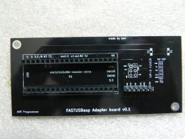

Thanks for that great example! Question: why is not i2c1_ev_isr() function provided explicetely as handler?
I noticed linker doesnt complain is this symbol available at link time, or not.
Also on amitesh

[STM32]: FASTUSBasp programmer for AVR
Introduction
[STM32]: Overclocking Blue Pill boards
Overclocking STM32 is far easier than overclocking AVR. In AVR, in order to …
[STM32]: Setting STM32 development …
I have bought STM32F103C8T6 aka “Blue-Pill” and ST Link V2 …
Creating Cheap PCBs In India for Makers: …
In previous post Creating Cheap PCBs In India for Makers: Designing and …
Use external clock as heartbeat to AVR …
Hello Everyone,
Creating Cheap PCBs In India for Makers: …
Most of the Indian elecronics hobbyists think that a PCB fabrication is …
[STM32]: Overcoming wrong pullup …
Introduction